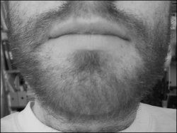

Shaving grace
In the Old Testament book of Leviticus, God forbids the Israelites from clipping the edges of their beards (Leviticus 19:28). Apart from orthodox Jews, most people living in New Zealand today would see this verse (as well as many of those surrounding it) as well and truly obsolete. I decided to put this mindset to the test by analysing the feasibility, and indeed the wisdom, of beard growth in twenty-first century New Zealand.
I’ll begin with bearded women. Hirsutism – excessive growth of hair – among women is rare, and usually results in derision from most quarters. Is this a completely unfair prejudice on the part of the public, or is there something more to the issue?
The ridicule arises from the inherent masculinity of a beard. Just as moisture is the essence of wetness (thanks Derek Zoolander), so too beards are the essence of manhood. The presence of a beard is a signal, I believe, not only that its owner has reached manhood, but that he has in fact embraced it, and for this reason there is stigma attached to bearded women.
But, accompanying the masculinity, there are also safety concerns for beard-growing men. I asked Wainuiomata’s hairiest cobbler, Dennis Bartlett, to describe his most dangerous beard-related experience. I expected an anecdote involving a close shave with rotating machinery; instead he told me about something far more chilling. Chilling because it strikes all too close to home for so many New Zealanders.
“Driving along the road one summer with the window down, my beard blew up into my eyes. I could only see out of one eye as I was driving along.”
Of course, a century ago, when horse-drawn carts were the norm, this wouldn’t have been an issue, but with the continual development of the automobile, the beard has become a very real threat to the safety of modern road users.
Beards also add an element of danger to the process of eating. An anonymous source told me of an evening spent at his would-be in-laws’ home. Dessert was cream buns, and he unwittingly indulged in one. Suspicion of its crunchy texture soon turned to mortification when he discovered he had swallowed the tip of his beard. His future in-laws could only see the funny side of a beard coated in saliva and cream, but the accident is far from a joking matter.
And the safety issues don’t stop there. A beard grower must also be aware that the effects of continually ignoring his five o’clock shadow are more far-reaching than simply his own face. For example, Bartlett’s wife, Janette, claims the beard once “asphyxiated” her in the middle of the night.
Yet despite the risks, there are definitely positives for today’s hirsute man. My father – barbigerous for more than 30 years – cites savings in time and money as the major advantage of growing a brush. I must admit, the statistics are compelling. A man who shaves for five minutes every day for 50 years will spend a total of 38 working weeks in front of the mirror. Let’s say he values his time at $20 per hour. That’s $30,400 in lost earnings. Using Gillette Sensor blades and Gillette shaving foam he will spend around $3500 over those 50 years keeping his face smooth – an opportunity cost of $33,900.
Serious whiskers come at a cost too, however. Dandruff can be quite a problem, Bartlett claims, and recommends Wella’s Free & Lovely shampoo. So let’s do the maths again. At $4.89 a bottle, Free & Lovely will cost the bearded gentleman around $15 a year. Calculate total shampooing time (18.25 hours per year), and the comparison between opportunity costs is astounding. Clean shavenness: $33,900. A decent beard: $19,000. A total saving of $14,900 over a lifetime.
But money isn’t everything – there’s also looks. Male grooming hasn’t always been New Zealand’s strong point. Is the beard to blame? Undoubtedly the most uncomfortable aspect of my research, I decided to check out some fan sites for arguably the world’s sexiest man, Brad Pitt, to see how he makes use of facial hair. In more than half the pictures he had at least two days’ growth and around 25% of the photos were of a bearded Brad. Proof, if ever I saw it, that beards can be beautiful.
Growing a beard is not for the faint-hearted. There’s no doubt it can be a dangerous experience – at times life-threating. But the rewards more than compensate. Aside from the financial and aesthetic advantages, a beard is a signal to the world that its owner is a man. Young men of Aotearoa should be encouraged to foster this hairiness and scream to the world, “We are real men!”
But this exhortation does come with a warning. Bartlett gives this advice to the aspiring beard grower: “If you’re gonna grow a beard, grow a decent one.